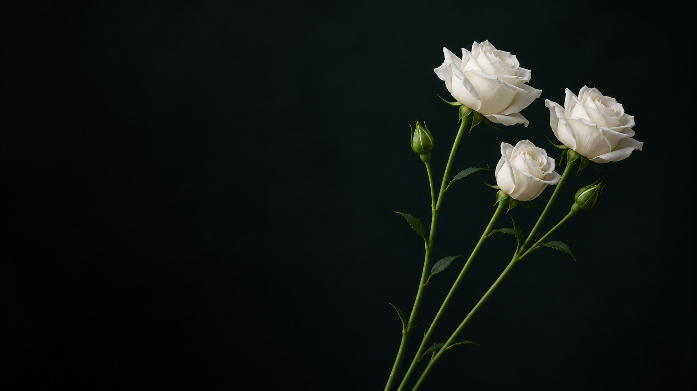

THE ARRANGEMENT
Room for a little stillness.
Ivory petals, green stems and a dark field. A photograph stays itself while a separate layer of small petals moves in front of it.
独立摄影与代码演练。暂停、细看和笔记均保留在此页。

A STILL LIFE / 01
Crafting timeless moments with every bloom.
Bringing the quiet of nature to your celebrations.
THE ARRANGEMENT
Ivory petals, green stems and a dark field. A photograph stays itself while a separate layer of small petals moves in front of it.
独立摄影与代码演练。暂停、细看和笔记均保留在此页。